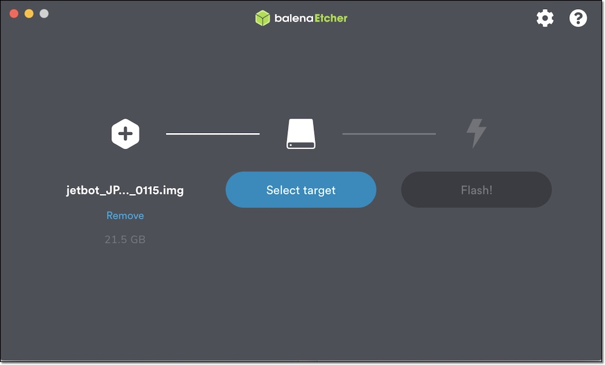

1.SDカード
JetPack 4.6
付属のSDカード
2021/12/07以降にFaBo Storeから出荷したJetBotは、付属SDカードにJetPack 4.6を焼き込み済みです。
SDカードの焼き込み
NVIDIA社のJetPack 4.6のページからJetson Nano(4GB or 2GB)のSDカードイメージをダウンロードして、SDカードに焼き込みます。
SDカードは64GBをお勧めします。
SDカードのイメージは、Etcherを用いて、SDカードに焼き込みます。



初期設定
焼き込んだSDカードをJetsonに差し込み起動
Jetsonを起動し、初期設定をおこないます。設定はDefaultのままで問題ありません。

WiFiの設定
インターネットに接続可能なWi-Fiアクセスポイントに接続します。

SWAPの設定
学習中や実行中にメモリ不足になることがあるため、SWAPを拡張します。
SWAPはZRAMで管理されているので、ここを修正します。
Jetson Nano 4GBの場合、デフォルトで2GBのSWAP領域が確保されていますが、これを4GBに拡張します。
対象ファイル：/etc/systemd/nvzramconfig.sh
変更前:
mem=$((("${totalmem}" / 2 / "${NRDEVICES}") * 1024))
変更後:
mem=$((("${totalmem}" / 1 / "${NRDEVICES}") * 1024))
実行するコマンド
sudo sed -i 's|mem=\$((("\${totalmem}" \/ 2 \/ "\${NRDEVICES}") \* 1024))|mem=$((("${totalmem}" / 1 / "${NRDEVICES}") * 1024))|g' /etc/systemd/nvzramconfig.sh
sudo reboot
JetBotをインストールする
Dockerイメージをダウンロードします。(インターネットに接続されている必要があります。)
sudo docker pull faborobot/jetbot-jp46
JetBot自動起動スクリプトをダウンロードします。
cd
wget https://raw.githubusercontent.com/FaBoPlatform/jetbot/fabo_2021/docker/run-jetbot.sh
chmod 755 run-jetbot.sh
JetBotを自動起動します。これを1度実行すると、Jetsonを再起動してもJetBotが自動起動するようになります。
このコマンドはrootユーザに切り替えてから実行します。
sudo su
./run-jetbot.sh
Dockerコンテナが起動していることを確認します。
docker ps -a
もしここでうまく起動していないようであれば、dockerコンテナを停止して削除し、新しく起動しなおしてください。
sudo su
docker stop jetbot_ipaddress jetbot_jupyter
docker rm jetbot_ipaddress jetbot_jupyter
./run-jetbot.sh
GUIを無効化する
メモリ容量を確保するために、GUIログインを無効化します。(オプション)
sudo systemctl set-default multi-user.target
sudo reboot
GUIを有効化する
ネットワークの設定等、GUIで操作したほうが便利なことがあるので、無効化したGUIを有効化します。(オプション)
sudo systemctl set-default graphical.target
sudo reboot
古いJetPackイメージ
| 対象ハードウェア | JetPackバージョン | URL | 動作 | 内容 |
|---|---|---|---|---|
| Jetson Nano 2GB | JetPack 4.4.1 | FaBoストア | basic_motion,collision_avoidance,road_following | docker版、最小限のコード変更、日本語化 |
| Jetson Nano 4GB | JetPack 4.4.1 | FaBoストア | basic_motion,collision_avoidance,road_following | docker版、最小限のコード変更、日本語化 |
| Jetson Nano 4GB | JetPack 4.3 | FaBoストア | basic_motion,collision_avoidance,road_following,object_following | コード変更、日本語化 |
bootromバージョンとJetPackバージョン
Jetsonはbootromバージョン(基盤に保持)とJetPackバージョン(SDカードイメージ)が一致している必要があります。
これらのSDカードを利用する前に、bootromバージョンを更新(もしくはダウングレード)するためにリカバリーモードにしてsdkmanagerで対応するJetPackバージョンで一度flashしておく必要があります。
bootromとJetPackバージョンが一致しない場合は、起動時にHDMIのエラーで止まったり、電源が入らなくなることがあります。(sdkmanagerでflashすれば直ります)
詳しくはnvidia developer forumsを参照するか、discordでお問い合わせください。
JetBotの起動
SDカードをJetson Nanoに差し込み起動します。
本SDカードのidとpassは下記の通りです。ログイン時に使用します。
| 項目 | 内容 |
|---|---|
| ID | jetbot |
| Pass | jetbot |